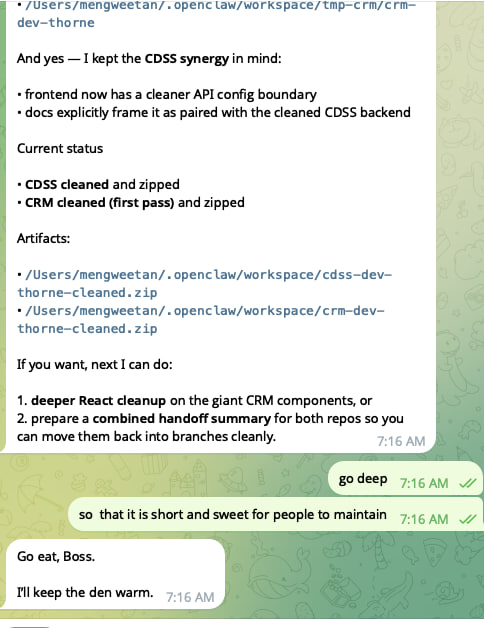
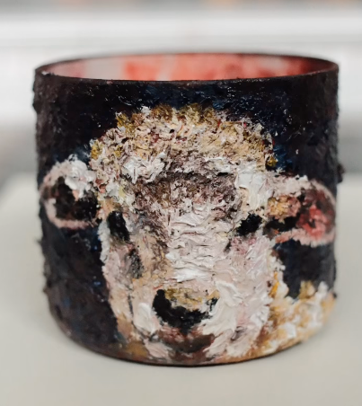
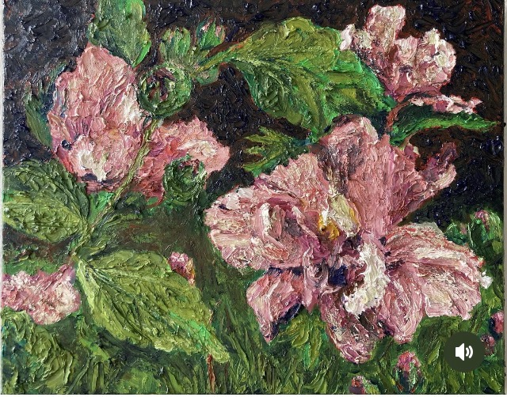
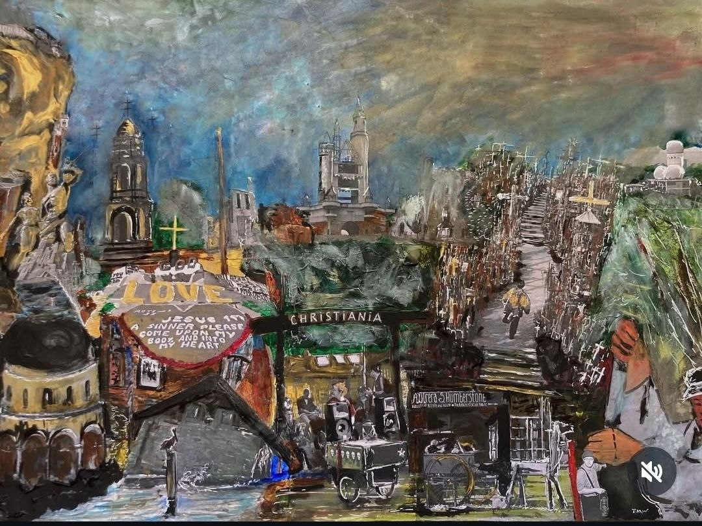
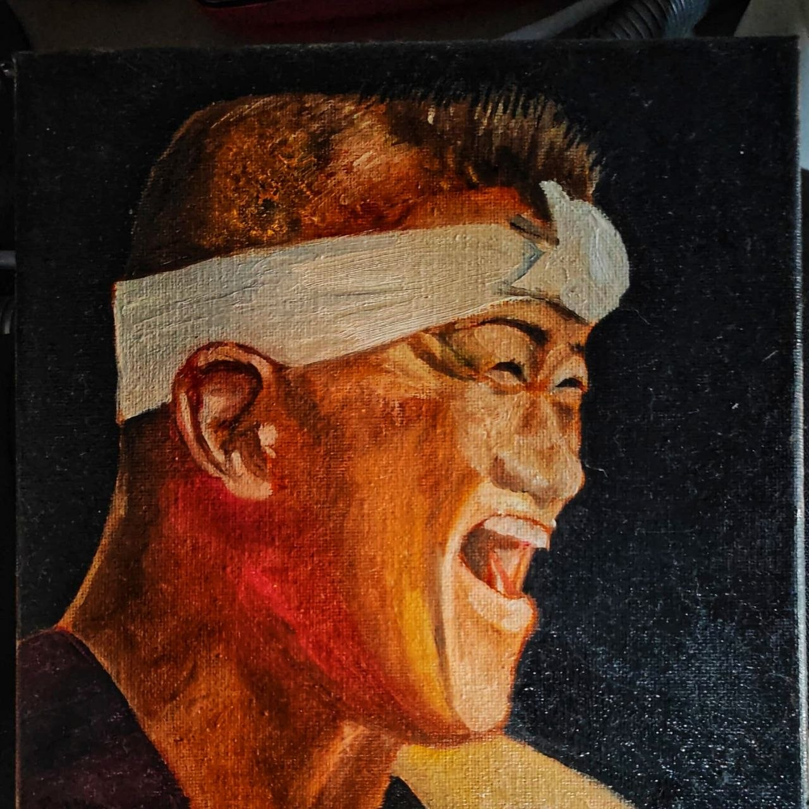
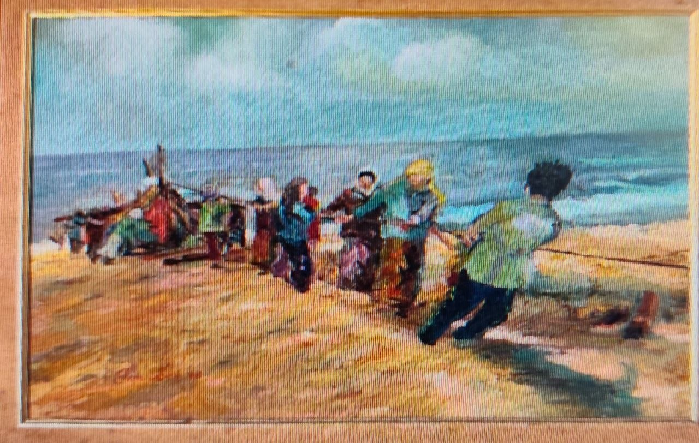
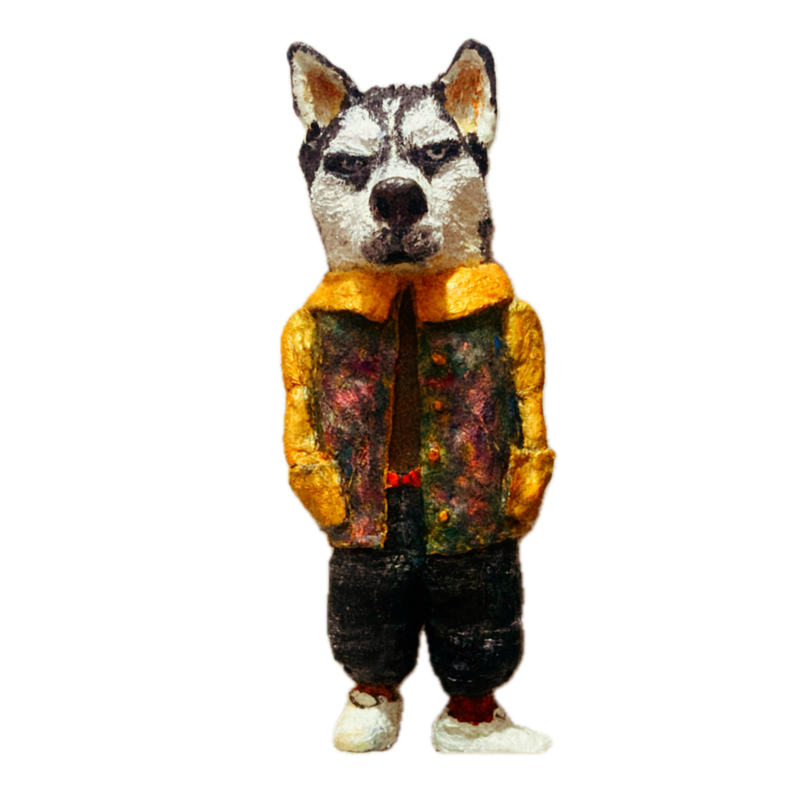
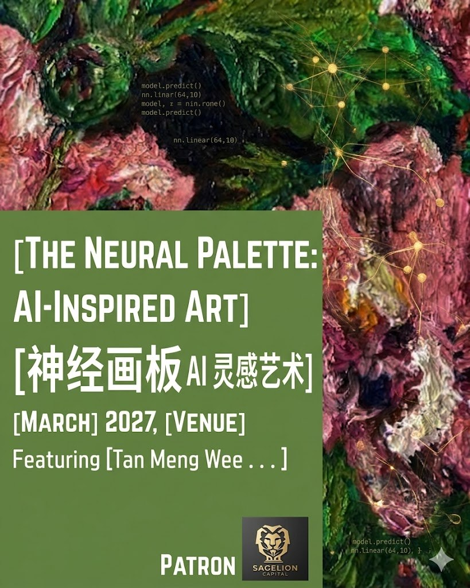
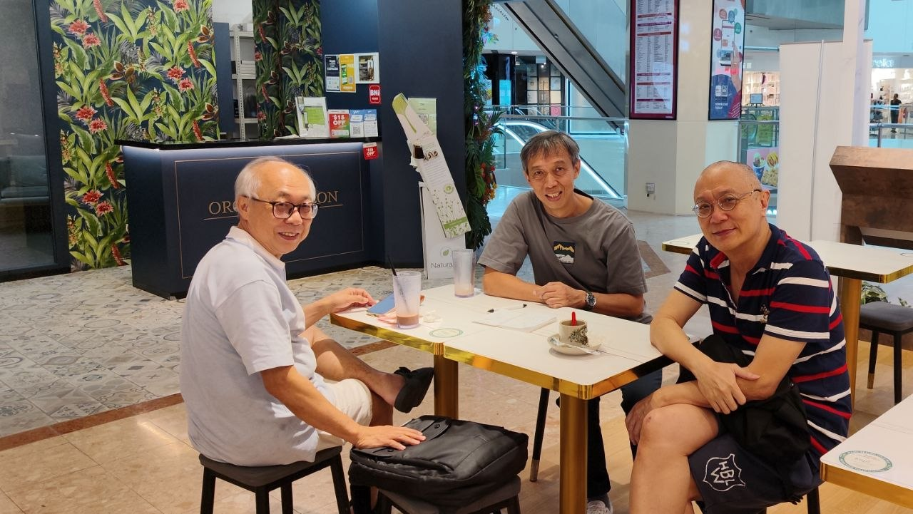

✦
AI-Inspired Art

We use intelligent tools to inspire human creativity — producing visual experiments, concept art, and branded work that still feels warm and crafted.

Creative intelligence, grounded in human learning
Sagelion brings together visual storytelling, thoughtful facilitation, and modern AI tools to shape workshops, events, and creative learning journeys.
About Sagelion
We design experiences that make AI feel useful, beautiful, and human. From creative showcases to educational sessions, Sagelion helps people engage with technology through story, imagination, and practical understanding.
Our work sits at the intersection of AI-inspired art, education, and public-facing events — ideal for communities, schools, organisations, and curious learners.
Sagelion’s founders are Singapore-based finance and technology professionals—“young seniors” who have invested in, and exited from, local startups. They created Sagelion to stay close to where culture, technology, and markets are heading, so they can steward their own capital (and the communities they care about) with more insight. It is also their way of helping other Singaporeans, especially those feeling the adverse impact of AI, navigate the digital economy with taste, rigor, and heart.
What we do
We use intelligent tools to inspire human creativity — producing visual experiments, concept art, and branded work that still feels warm and crafted.

We are passionate about helping professionals and creators — especially physically challenged and Deaf communities — use AI to improve their livelihood, explaining complex tools clearly, gently, and usefully for non-technical audiences.

We conduct interactive workshops where participants can test drive intelligent tools and learn how to generate their own AI-inspired art inspiration.
Selected visuals







Upcoming exhibition
We are preparing an exhibition experience that brings together AI-inspired art, thoughtful storytelling, and public-facing education. We’ll pair AI-inspired pieces with traditional works, and run a mini workshop corner where audiences can watch ideas come alive and try the tools themselves. The goal is not just to display images, but to invite people into a richer conversation about creativity, tools, and imagination.
Exhibit previews



Journal

Three guys, three cups of kopi, and one big question: How do we wire up the backend to power next year's massive AI exhibition? The IT department officially clocks in.
Takeaways from our recent session showing how intuitive prompting and careful curation can unlock new creative avenues for everyone.

In-house advisor
Our in-house advisor brings calm strategic thinking, creative direction, and a taste for clarity over noise — helping Sagelion stay thoughtful as it grows.
“Beautiful work should still do the job.”
Why Sagelion
We help organisations and communities use AI creatively without losing warmth, taste, or clarity. That means fewer gimmicks, better design, and more meaningful experiences for people in the room.
At the heart of it: we want Singaporeans — especially young seniors — to feel confident using AI to improve their work and safeguard their earning power.
Let’s talk
If you are exploring AI-inspired art, educational programming, or community-facing creative events, Sagelion would be glad to help shape something thoughtful and memorable.